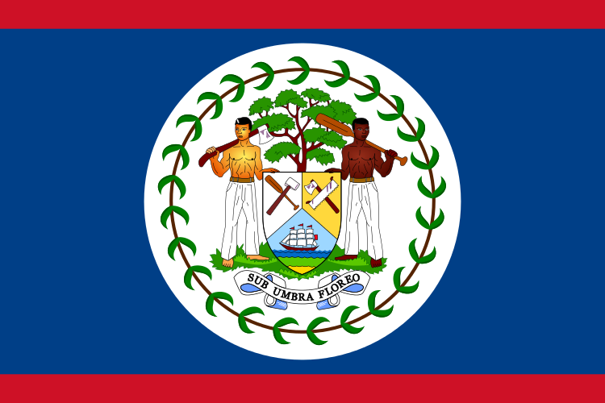
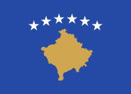
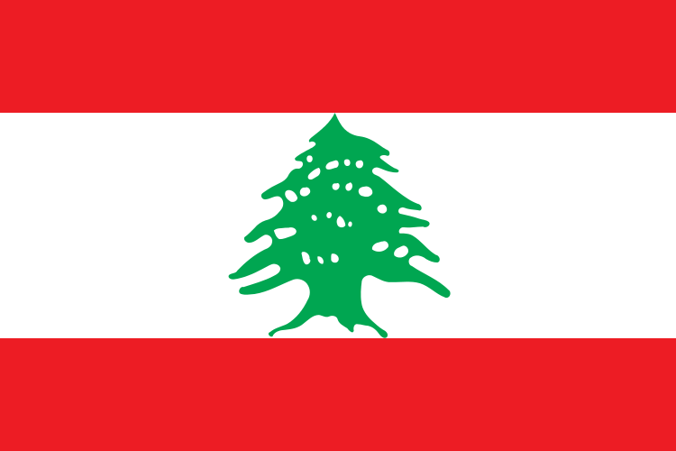
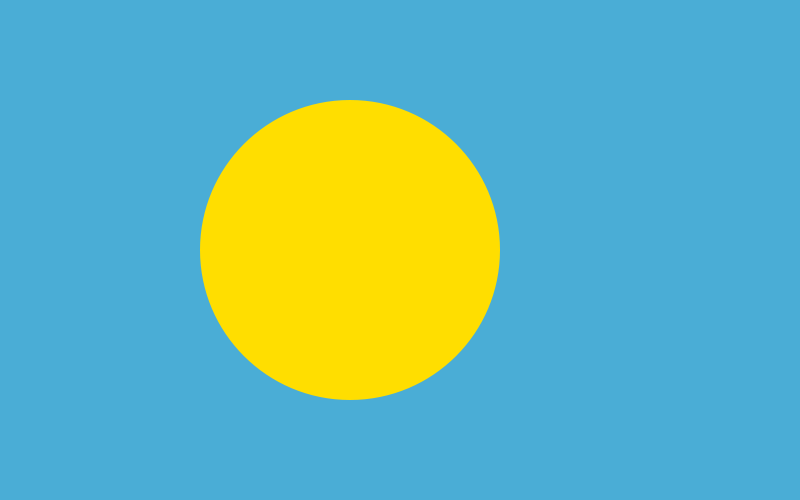
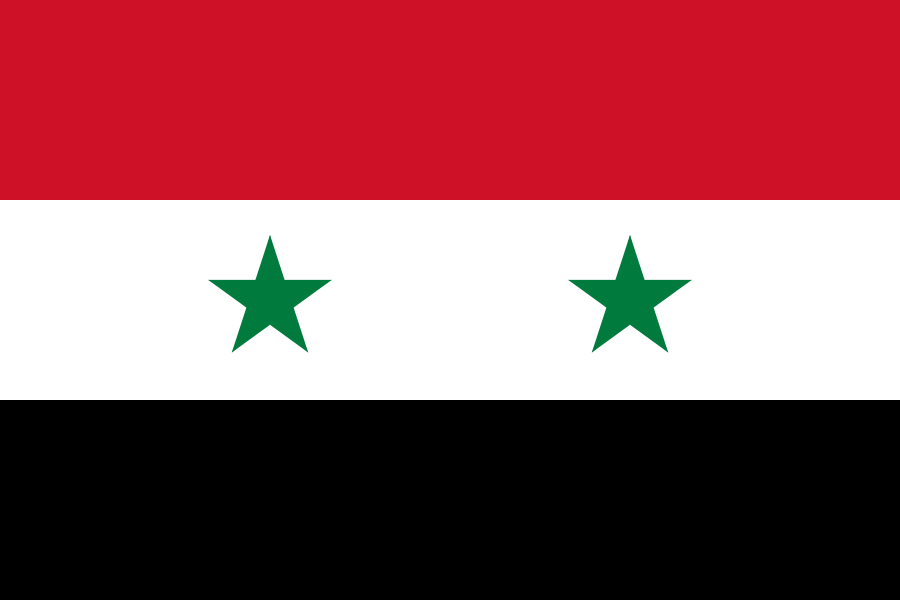
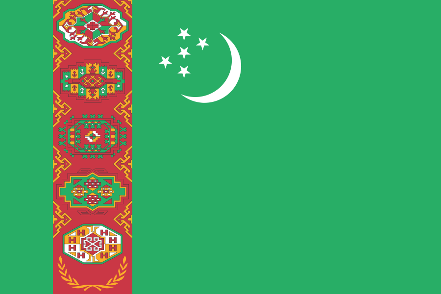
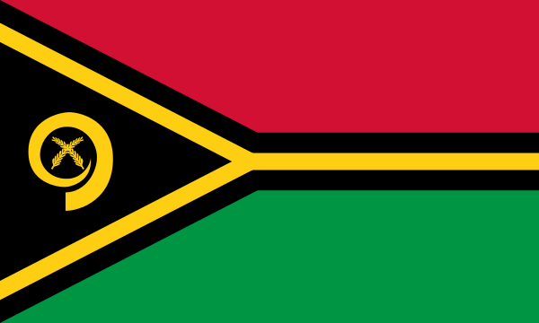
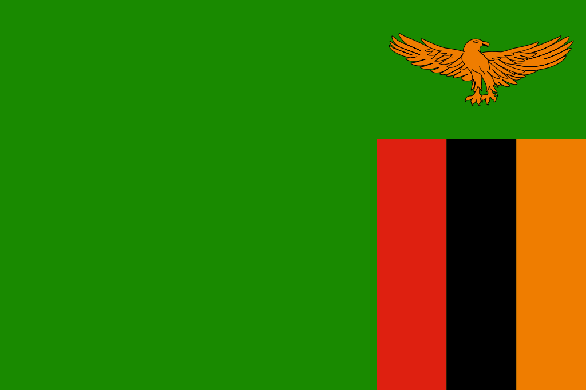
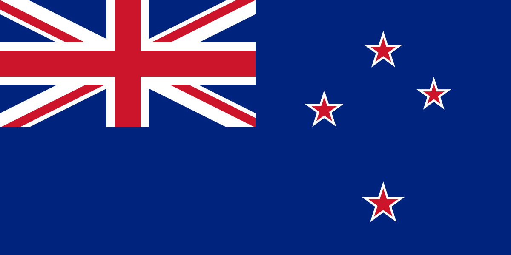
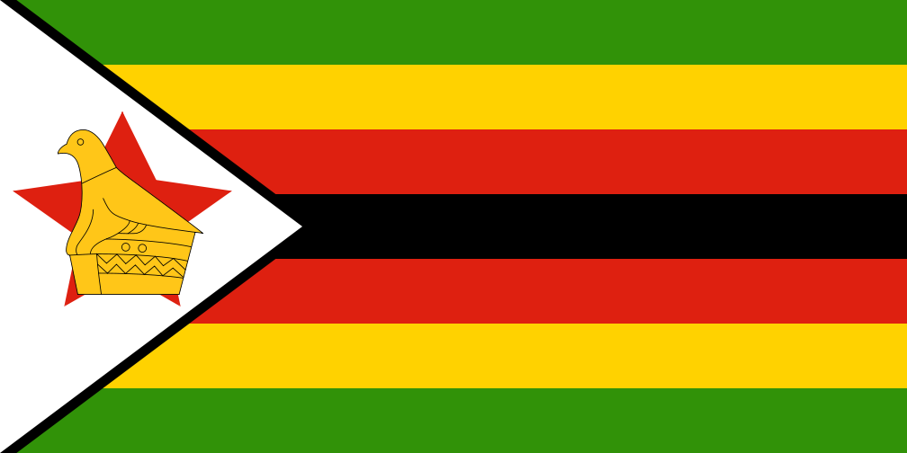

Ketu gjeni listen e plote te shteteve sovrane apo akoma pa sovranitet. Lista aktualisht permban 194 shtete (te gjithe anetaret e OKB-se dhe Vatikanin) dhe 12 territore ku statusi si "shtet" eshte i diskutueshem ose ku nuk njihet sovraniteti.
A |
||||
| Shteti | Flamuri | Siperfaqa (km2) | Popullsia | Kryeqyteti |
|---|---|---|---|---|
| Afganistani | 652 230 | 29 121 000 | Kabuli | |
| Afrika Jugore | 1,221,037 | 48,810,427 | Pretoria | |
| Republika e Afrikes Qendrore | 622,984 | 4,422,000 | Bangui | |
| Algjeria | 2 381 741 | 34 586 000 | Algjeri | |
| Andora | 468 | 85 000 | Andorra la Vella | |
| Angola | 1 246 700 | 13 068 000 | Luanda | |
| Antigua dhe Barbuda | 443 | 87 000 | Saint John's | |
| Arabia Saudite | 2,250,000 | 28,376,355 | Riadi | |
| Argjentina | 2 780 400 | 41 343 000 | Buenos Aires | |
| Armenia |  | 29 743 | 2 967 000 | Jerevani |
| Australia | 7 741 220 | 21 516 000 | Canberra | |
| Austria | 83,855 | 8,414,638 | Vjena | |
| Azerbajxhani | 86 600 | 8 372 000 | Baku | |
B |
||||
| Shteti | Flamuri | Siperfaqa (km2) | Popullsia | Kryeqyteti |
| Bahamet | 13 880 | 310 000 | Nassau | |
| Bahreini | 760 | 738 000 | Manama | |
| Bangladeshi | 143 998 | 156 118 000 | Dhaka | |
| Barbadosi | 430 | 286 000 | Bridgetown | |
| Belgjika | 30 528 | 10 423 000 | Brukseli | |
| Beliza |  | 22 966 | 315 000 | Belmopan |
| Benini | 112 622 | 9 056 000 | Porto Novo | |
| Birmania | 676,578 | 60,280,000 | Naypyidaw | |
| Bjellorusia | 207,595 | 9,457,500 | Minsk | |
| Bolivia | 1 098 581 | 9 947 000 | La Paz | |
| Bosnja_dhe_Hercegovina | 51 197 | 4 622 000 | Sarajeva | |
| Botsvana | 581 730 | 2 029 000 | Gaborone | |
| Brazili | 8 514 877 | 187 103 000 | Brazilia | |
| Bregu_i_fildisht | 322 460 | 16 962 491 | Yamoussoukro | |
| Britania e madhe dhe Irlanda e veriut | 243 610 | 58 348 000 | Londra | |
| Brunei | 5 765 | 395 000 | Bandar Seri Begawan | |
| Bullgaria | 110 879 | 7 149 000 | Sofja | |
| Burkina_Faso | 274 200 | 16 242 000 | Ouagadougou | |
| Burundi | 27 830 | 9 863 000 | Bujumbura | |
| Butani | 38 394 | 700 000 | Thimphu | |
Ç |
||||
| Shteti | Flamuri | Siperfaqa (km2) | Popullsia | Kryeqyteti |
| Çadi | 1,284,000 | 10,329,208 | Nxhamena | |
| Çekia |  | 78,866 | 10,512,208 | Praga |
D |
||||
| Danimarka | 43 094 | 5 516 000 | Kopenhagen | |
| Dominika | 751 | 73 000 | Roseau | |
E |
||||
| Egjipti |  | 1 001 450 | 80 472 000 | Kajro |
| Ekuadori | 283 561 | 14 791 000 | Kuito | |
| Emiratet_e_Bashkuara_Arabe | 83,600 | 8,264,070 | Abu Dabi | |
| Eritrea | 117.600 | 5.793 000 | Asmara | |
| Estonia | 45 228 | 1 291 000 | Talini | |
| Etiopia | 1 104 300 | 88 013 000 | Addis Abeba | |
F |
||||
| Filipinet |  | 300,000 | 92,337,852 | Manila |
| Finlanda | 338 145 | 5 255 000 | Helsinki | |
| Fixhi | 18,274 | 849,000 | Suva | |
| Franca | 551 500 | 62 814 000 | Parisi | |
G |
||||
| Shteti | Flamuri | Siperfaqa (km2) | Popullsia | Kryeqyteti |
| Gaboni | 267 667 | 1 545 000 | Libreville | |
| Gambia | 11 295 | 1 824 000 | Banjul | |
| Gana | 238 533 | 24 340 000 | Akra | |
| Grenada | 344 | 108 000 | Saint George's | |
| Greqia | 131 957 | 10 750 000 | Athina | |
| Guajana | 214 969 | 748 000 | Georgetown | |
| Guatemala | 108 889 | 13 550 000 | Guatemala | |
| Guinea | 245 857 | 10 324 000 | Konakri | |
| Guinea_Bisau | 36 125 | 1 565 000 | Bissau | |
| Guinea_Ekuatoriale | 28 051 | 651 000 | Kabuli | |
Gj |
||||
| Gjeorgjia | 69 700 | 4 601 000 | Tbilisi | |
| Gjermania | 357 022 | 82 283 000 | Berlini | |
H |
||||
| Haiti |  | 27.750 | 9.720.000 | Port-au-Prince |
| Hollanda | 41 543 | 16 783 000 | Amsterdami | |
| Hondurasi | 112 090 | 7 989 000 | Tegucigalpa | |
| Hungaria | 93 028 | 10 992 000 | Budapesti | |
I |
||||
| Shteti | Flamuri | Siperfaqa (km2) | Popullsia | Kryeqyteti |
| India | 3 287 263 | 1 210 193 422 | New Delhi | |
| Indonezia | 1 904 569 | 242 968 000 | Xhakarta | |
| Iraku | 438 317 | 29 672 000 | Bagdadi | |
| Irani | 1 648 195 | 76 923 000 | Teherani | |
| Irlanda | 70 273 | 4 623 000 | Dublini | |
| Islanda | 103 000 | 309 000 | Reykjavik | |
| Ishujt_Marshall | 181 | 56,429 | Majuro | |
| Ishujt_Solomon | 28.400 | 523,000 | Honiara | |
| Italia | 301 340 | 58 091 000 | Roma | |
| Izrseli | 22 072 | 7 354 000 | Jerusalemi | |
J |
||||
| Japonia |  | 377 915 | 126 804 000 | Tokjo |
| Jemeni | 527,970 | 20,727,063 | Sana | |
| Jordania | 89 342 | 6 703 627 | Amani | |
K |
||||
| Shteti | Flamuri | Siperfaqa (km2) | Popullsia | Kryeqyteti |
| Kamboxhia | 181 035 | 14 454 000 | Phnom Penh | |
| Kameruni | 475 440 | 19 294 000 | Jaunde | |
| Kanadaja |  | 9 984 670 | 33 760 000 | Otava |
| Katari | 11 586 | 841 000 | Doha | |
| Kazakistani | 2 724 900 | 15 460 000 | Astana | |
| Kenia | 580 367 | 40 047 000 | Nairobi | |
| Kepi_i_Gjelber | 4 033 | 509 000 | Praia | |
| Kili | 756 102 | 16 746 000 | Santiago | |
| Kina | 9 596 961 | 1 330 141 000 | Pekini | |
| Kirgizistani | 199 951 | 5 509 000 | Bishkeku | |
| Kiribati |  | 811 | 99 000 | South Tarawa |
| Kolumbia | 1 138 910 | 44 205 000 | Bogota | |
| Komoret | 2 235 | 773 000 | Moroni | |
| Koreja_e_Jugut | 99 720 | 48 636 000 | Seoul | |
| Koreja_e_Veriut | 120 538 | 22 757 000 | Penian | |
| Kosova |  | 10 887 | 1 815 000 | Prishtina |
| Kosta_Rika | 51,100 | 4,301,712 | San Jose | |
| Kroacia | 56,594 | 4,290,612 | Zagrebi | |
| Kuba | 109,884 | 11,241,161 | Havana | |
| Kuvajti | 17,820 | 3,566,437 | Kuvajti | |
L |
||||
| Shteti | Flamuri | Siperfaqa (km2) | Popullsia | Kryeqyteti |
| Laosi | 236,800 | 6,500,000 | Vientiane | |
| Lesoto |  | 30,355 | 2,067,000 | Maseru |
| Letonia | 64,589 | 2,217,053 | Riga | |
| Libani |  | 10,452 | 4,224,000 | Beirut |
| Liberia | 111,369 | 3,786,764 | Monrovia | |
| Libia | 1,759,541 | 5,670,688 | Tripoli | |
| Lihtenshtajni | 160 | 36,281 | Vaduz | |
| Lituania | 65,300 | 2,986,072 | Vilnius | |
| Luksemburgu | 2,586.4 | 509,074 | Luksemburgu | |
M |
||||
| Madagaskari | 587,041 | 22,005,222 | Antananarivo | |
| Malajzia | 329,847 | 28,334,135 | Kuala Lumpur | |
| Malavi | 118,484 | 14,901,000 | Lilongwe | |
| Maldivet | 298 | 328,536 | Male | |
| Mali | 1,240,192 | 14,517,176 | Bamako | |
| Mali_i_zi |  | 13.812 | 640.029 | Podgorica |
| Malta | 316 | 452,515 | Valeta | |
| Maqedonia_e_Veriut | 25 713 | 2 114 550 | Shkupi | |
| Maroku | 446,550 | 32,644,370 | Rabati | |
| Mauritania | 1,030,700 | 3,069,000 | Nouakchott | |
| Ishujt_Mauritius | 2,040 | 1,291,456 | Port Louis | |
| Meksika | 1,972,550 | 113,910,608 | Meksiko | |
| Moldavia | 33,846 | 3,559,500 | Kishinau | |
| Monako | 1.98 | 36,371 | Monako | |
| Mongolia | 1,564,115.75 | 2,754,685 | Ulan Bator | |
| Mozambiku | 801,590 | 22,894,000 | Maputo | |
N |
||||
| Shteti | Flamuri | Siperfaqa (km2) | Popullsia | Kryeqyteti |
| Namibia | 825,418 | 2,100,000 | Uindhuk | |
| Naurua | 21 | 9,378 | Jaren | |
| Nepali |  | 147,181 | 29,331,000 | Katmanduja |
| Nigeri | 1,267,000 | 16,274,738 | Niamei | |
| Nigeria | 923,768 | 170,123,740 | Abuja | |
| Nikaraguaja | 130,373 | 5,891,199 | Managua | |
| Norvegjia | 385,252 | 5,033,675 | Oslo | |
O |
||||
| Omani | 309,501 | 2,773,479 | Maskati | |
P |
||||
| Pakistani | 796,095 | 180,440,005 | Islamabadi | |
| Palau |  | 459 | 20,956 | Ngerulmudi |
| Panamaja | 75,517 | 3,595,490 | Panamaja | |
| Papua_Guinea_e_Re | 462,840 | 6,310,129 | Port Moresbi | |
| Paraguaji | 406,752 | 6,454,548 | Asuncion | |
| Peruja | 1,285,216 | 30,135,875 | Lima | |
| Polonia | 312,685 | 38,186,860 | Varshava | |
| Portugalia | 92,212 | 10,581,949 | Lisbona | |
Q |
||||
| Qiproja | 9,251 | 1,099,341 | Nikosia | |
R |
||||
| Republika_Dominikane | 652 230 | 29 121 000 | Santo Domingo | |
| Ruanda | 26,338 | 11,689,696 | Kigali | |
| Rumania | 238,391 | 19,043,767 | Kabuli | |
| Rusia | 17,075,400 | 143,200,000 | Moska | |
S |
||||
| Shteti | Flamuri | Siperfaqa (km2) | Popullsia | Kryeqyteti |
| Salvadori | 21,040 | 6,134,000 | San Salvador | |
| Samoa | 2,831 | 194,320 | Apia | |
| San_Marinoja | 61.2 | 32,404 | San Marino | |
| Sao_Tome_dhe_Principe | 1,001 | 183,176 | Sao Tome | |
| Sejshellet | 451 | 84,000 | Viktoria | |
| Senegali | 196,723 | 12,855,153 | Dakari | |
| Serbia | 77,453 | 7,120,666 | Beogradi | |
| Sierra_Leone |  | 71,740 | 5,485,998 | Fritaun |
| Singapori | 710 | 5,183,700 | Singapori | |
| Siria |  | 185,180 | 22,530,746 | Damasku |
| Sllovakia |  | 49,035 | 5,445,324 | Bratislava |
| Sllovenia |  | 20,273 | 2,060,382 | Lubljana |
| Somalia | 637,657 | 10,085,638 | Mogadishu | |
| Spanja | 505,992 | 47,190,493 | Madridi | |
| Sri_Lanka | 65,610 | 20,277,597 | Kote | |
| Suazilendi | 17,364 | 1,185,000 | Mbabane | |
| Sudani |  | 1,886,068 | 30,894,000 | Hartum |
| Sudani_i_Jugut | 619,745 | 8,260,490 | Xhuba | |
| Suedia | 449,964 | 9,514,406 | Stokholmi | |
| Surinami | 163,821 | 560,157 | Paramaribo | |
SH |
||||
| Shen_Kits_dhe_Nevis | 261 | 51,300 | Basseterre | |
| Shen_Lucia | 617 | 173,765 | Castries | |
| Shen_Vincenti_dhe_Grenadinet | 389 | 120,000 | Kingstaun | |
| Shqiperia | 28 748 | 2 831 741 | Tirana | |
| Shtetet_e_Bashkuara_te_Amerikes | 9,826,675 | 314,629,000 | Uashingtoni | |
T |
||||
| Shteti | Flamuri | Siperfaqa (km2) | Popullsia | Kryeqyteti |
| Tailanda | 513,120 | 66,720,153 | Bangkok | |
| Tanzania | 945,203 | 43,188,000 | Dodoma | |
| Taxhikistani | 143,100 | 7,616,000 | Dushanbeu | |
| Timori_Lindor | 14,874 | 1,066,582 | Dili | |
| Togoja | 748 | 103,036 | Lome | |
| Tonga | 652 230 | 29 121 000 | Nuku'alofa | |
| Trinidadi_dhe_Tobakoja | 5,131 | 1,227,505 | Port-of-Spain | |
| Tunizia | 163,610 | 10,732,900 | Tunis | |
| Turkmenistani |  | 491,210 | 5,125,693 | Ashgabati |
| Turqia |  | 783,562 | 74,724,269 | Ankara |
| Tuvalu | 26 | 10,544 | Funafuti | |
U |
||||
| Uganda | 236,040 | 35,873,253 | Kampala | |
| Ukraina | 603,628 | 45,888,000 | Kievi | |
| Uruguaj | 176,215 | 3,318,535 | Montevideo | |
| Uzbekistani | 447,400 | 29,559,100 | Tashkenti | |
V |
||||
| Vanuatu |  | 12,190 | 224,564 | Port Vila |
| Vatikani | 0.44 | --- | Vatikani | |
| Venezuela | 916,445 | 28,946,101 | Karakasi | |
| Vietnami | 331,210 | 87,840,000 | Hanoi | |
XH |
||||
| Xhamajka | 10,991 | 2,889,187 | Kingston | |
| Xhibuti | 23,200 | 923,000 | Xhibuti | |
Z |
||||
| Zambia |  | 752,618 | 14,309,466 | Lusaka |
| Zelanda_e_Re |  | 268,021 | 4,433,100 | Uellington |
| Zimbabveja |  | 390,757 | 12,619,600 | Harare |
| Zvicra | 41,285 | 8,000,000 | Berna | |